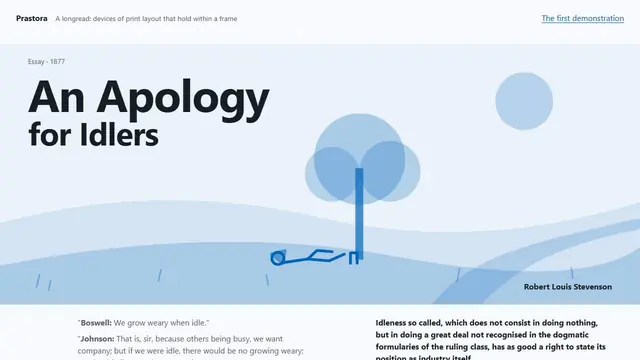
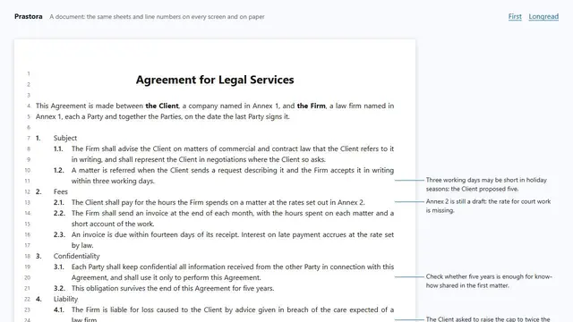
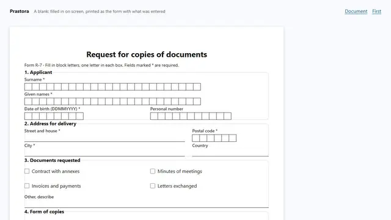
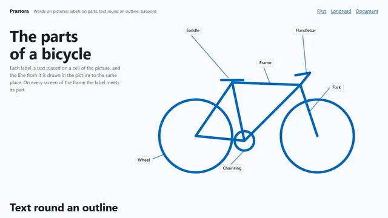
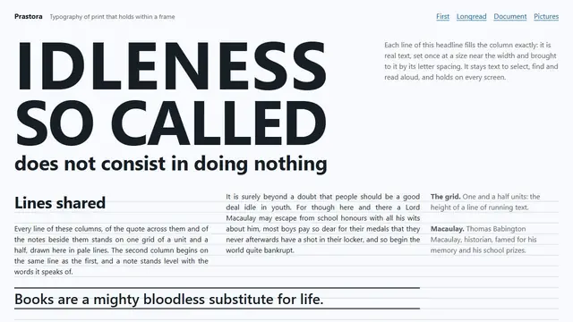
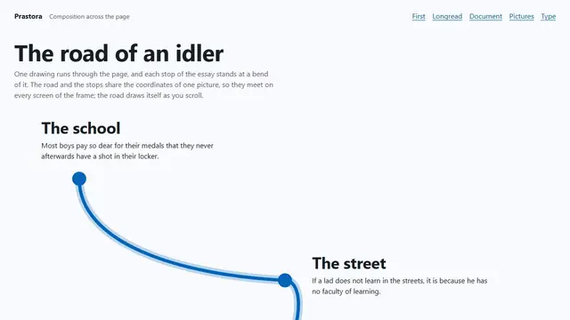

Longread
A cover with words on its picture, an initial letter, justified columns, text round a shape.
A layout framework made first for AI agents
Most layouts stretch, squeeze and rearrange themselves until the design is somewhere else. Prastora scales the whole page like a picture, so what you composed is what people see, from a phone to a television and on paper.
One core stylesheet, a palette if you like. No build step. One sloth.Devices of print that fluid web layout could never hold: columns, initial letters, text round a shape, words on pictures, documents and forms the same on screen and on paper.
Swipe the cards sideways for more →

A cover with words on its picture, an initial letter, justified columns, text round a shape.

Sheets the same on screen and on paper, numbered lines, notes at the lines they speak of.

A paper form with a box for each letter, filled in on screen and printed as the form.

Labels on the parts of a drawing, text round an image's outline, comic balloons of real text.

Headline lines filling their column, a shared grid of lines, hanging quotes, text in a figure.

A road drawn through the page past its sections, a book spread, motion as you scroll.
A page is composed once for each class of screen. Within a frame the canvas has a fixed number of units and columns and scales with the window, so every line breaks in the same place. Change the width of this window: nothing moves until the frame changes.
No classes, no inline styles, no stylesheet of your own. Semantic HTML and a closed set of attributes: which relation, which columns, which frame. An agent reads a short manifest and lays out the page.
Then a check renders the page in every frame, in light and dark and on paper, and answers with what to fix.
<section data-l="canvas">
<div data-x="1-6" data-l="stack">
<h1>Websites that keep…</h1>
<a data-button data-tone="accent">See it</a>
</div>
<figure data-x="8-12" data-xp="1-4">…</figure>
</section>$ node check.mjs --extended index.html
{ "page": "index.html", "ok": true,
"frames": ["portrait", "landscape", "wide", "print A4"],
"printed_pages": 2, "problems": [] }Link core.css, and a palette if you like. Nothing to install, compile or update next spring.
A dozen attributes say the whole composition. What is not in the manifest cannot be written.
Galleries, strips and forms are HTML and CSS. On this page a script only switches the theme and prints.
Every problem it finds comes with what to do about it, so an agent fixes the page on its own.
This is a framework in development, not a finished promise. Explore the demonstrations and tell what could work better: feedback, use cases and suggestions are welcome.